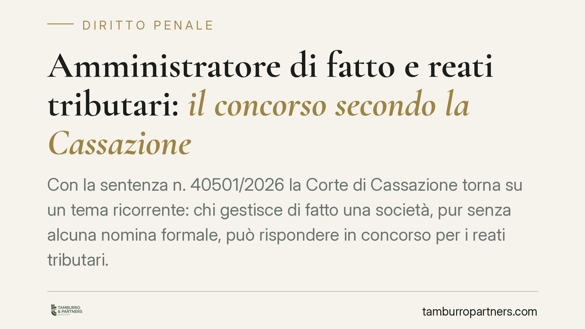

Amministratore di fatto e reati tributari: il concorso secondo la Cassazione
Con la sentenza n. 40501/2026 la Corte di Cassazione torna su un tema ricorrente: chi gestisce di fatto una società, pur senza alcuna nomina formale, può rispondere in concorso per i reati tributari. Ciò che conta non è la carica, ma il contributo materiale e consapevole alle condotte illecite. Una pronuncia che incide su strutture societarie opache e su chi vi opera dietro le quinte.

Il caso
La Terza Sezione Penale della Cassazione è intervenuta su una vicenda ormai classica: una "società contenitore" — ossia un soggetto formalmente intestato a un prestanome, ma governato nei fatti da altri — utilizzata per realizzare condotte fiscali illecite. Il Tribunale del riesame aveva confermato le misure a carico del soggetto che, pur privo di carica, dirigeva concretamente l'attività.
La Corte ha ribadito un principio consolidato ma spesso frainteso: la responsabilità penale tributaria non segue l'intestazione formale, bensì la realtà gestoria. Chi esercita in via continuativa i poteri tipici dell'amministratore risponde dei reati connessi a quella gestione.
Inquadramento normativo
Il riferimento è il D.lgs. 74/2000, che disciplina i reati in materia di imposte sui redditi e sul valore aggiunto (dalla dichiarazione fraudolenta all'omesso versamento). Molte di queste fattispecie individuano come autore il rappresentante legale o l'amministratore della società.
Il ponte che consente di raggiungere l'amministratore di fatto è duplice. Da un lato l'art. 2639 del codice civile, che equipara al soggetto formalmente investito chi "esercita in modo continuativo e significativo i poteri tipici" della carica. Dall'altro l'art. 110 del codice penale, che disciplina il concorso di persone nel reato.
La Cassazione precisa che non basta una presenza generica o un ruolo marginale. Occorre un contributo materiale, concreto e causalmente rilevante, accompagnato dalla consapevolezza del disegno illecito. In altri termini: sapere cosa si sta facendo e fornire un apporto effettivo alla sua realizzazione.
Cosa cambia per chi gestisce senza carica
La pronuncia ha effetti pratici su una platea ampia. Non riguarda solo i prestanome, ma chiunque — socio, consulente di fatto, familiare, dominus occulto — eserciti un'influenza gestoria sostanziale sull'ente.
Tre conseguenze meritano attenzione.
Primo: l'assenza di firma o di nomina non protegge. L'intestazione a terzi di una società non mette al riparo chi ne tiene realmente le redini. La giurisprudenza guarda ai fatti: chi tratta con banche e fornitori, chi decide i pagamenti, chi impartisce direttive.
Secondo: la prova del ruolo di fatto si costruisce su indizi convergenti. Deleghe operative, utenze, email, disponibilità di conti, rapporti con il commercialista, dichiarazioni di dipendenti. Elementi apparentemente neutri che, letti insieme, delineano il potere gestorio.
Terzo: il concorso non richiede che l'amministratore di fatto ponga in essere materialmente la condotta tipica (ad esempio presentare la dichiarazione). È sufficiente un apporto che renda possibile o agevoli il reato commesso da altri.
Il profilo soggettivo resta decisivo
Un punto va sottolineato, perché spesso trascurato. La responsabilità concorsuale presuppone il dolo: la volontà di partecipare al fatto illecito con la consapevolezza del suo significato.
Chi svolge funzioni operative in buona fede, ignaro delle finalità evasive, si trova in una posizione diversa da chi conosce e condivide il disegno. La difesa, in questi casi, si gioca proprio sulla ricostruzione dell'elemento psicologico e sulla reale estensione del contributo.
Cosa fare in concreto
- Verificate la coerenza tra ruolo formale e attività reale. Se gestite operativamente una società senza carica, siete esposti a responsabilità come se la carica l'aveste.
- Mappate i poteri di firma e le deleghe. Conti, rapporti bancari e autorizzazioni di spesa sono i primi indizi del ruolo di fatto: definiteli con chiarezza.
- Conservate la tracciabilità delle decisioni. Documentare chi decide cosa aiuta a distinguere apporti gestori da collaborazioni esecutive.
- Non accettate intestazioni fiduciarie senza valutarne i rischi penali. Il prestanome risponde, ma risponde anche chi lo utilizza.
- Rivolgetevi tempestivamente a un difensore in caso di indagine. La posizione dell'amministratore di fatto si definisce nelle prime fasi, spesso davanti al Tribunale del riesame.
Osservazioni conclusive
La sentenza n. 40501/2026 non introduce novità dirompenti, ma consolida un orientamento chiaro: nel diritto penale tributario la sostanza prevale sulla forma. Le architetture societarie costruite per schermare i veri gestori offrono una protezione sempre più fragile.
Consigliamo a chi opera in contesti societari complessi di valutare con attenzione il proprio ruolo effettivo, prima che sia un procedimento penale a definirlo.
---
*Contributo informativo a cura di Tamburro & Partners - Avv. Giuseppe Tamburro. Non costituisce parere legale.*
Ogni condominio ha una storia a sé.
Se gestisci un'amministrazione e vuoi un confronto su una specifica questione condominiale, scrivi allo studio. Ti rispondiamo entro un giorno lavorativo.